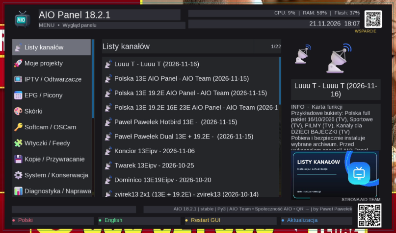
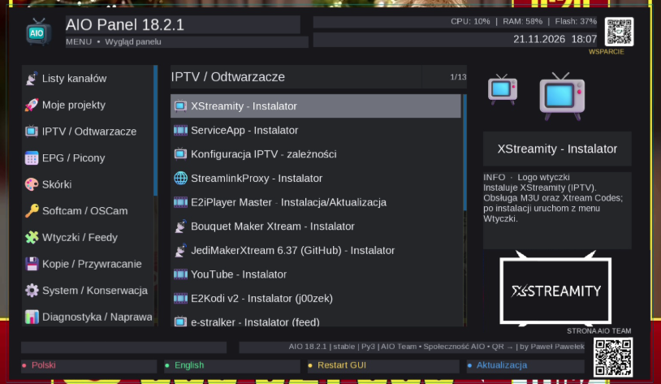
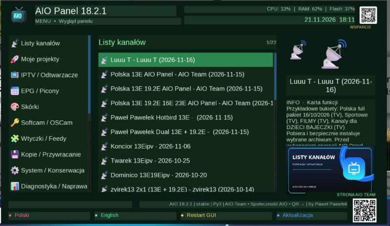

Uaktualnij, zachowując dane
Zachowaj FAVOURITES, własne bukiety, separatory, kolejność i numerację. DVB-T/T2, DVB-C i własne IPTV pozostają bez zmian. Aktualizacja tej samej listy dotyczy SAT; instalując inną, możesz zachować oba zestawy bukietów.
AIO TEAM · ENIGMA2 · WYDANIE 21.11.2026
AIO Panel IPK: zawsze najnowsza wersja — bez logowania, bez limitów i bez zużycia darmowej puli.
Nowoczesne ikony, dziewięć motywów kolorystycznych i rozszerzone podglądy skórek, piconów, wtyczek oraz list kanałów. Klawisz INFO otwiera podgląd, a EXIT wraca do wybranej pozycji. Zachowano bezpieczną aktualizację list SAT oraz zakładkę „Moje projekty”.

18.2.1 · 21.11.202621 listopada 2026 · wydanie stabilne
Przebudowany wygląd panelu i znacznie większa liczba rzeczywistych podglądów. Wszystkie zrzuty poniżej pochodzą z działającej wersji 18.2.1.


21 listopada 2026 · oficjalne wydanie GitHub
Pakiety IPK i DEB zweryfikowano z oficjalnym wydaniem GitHub 18.2.1. Strona udostępnia również własne lustrzane pliki instalacyjne.
daea5a21daa8f9d7122b9ecf5bdfb76eba915aa3d791f5486eca53007af732364b17c8eb81502832a5c6fbb024904eded2403a7f73bef3550272a449793cc48cPubliczny IPK: link /api/aio-panel-ipk nie wymaga logowania, nie zużywa limitu i zachowuje licznik przekierowań. Gdy pojawi się nowsze stabilne wydanie GitHub, ten link może automatycznie wskazywać nowszy IPK. Podane sumy dotyczą dokładnie 18.2.1.
Instalacja
Pobierz właściwy format dla swojego obrazu Enigma2, a następnie wykonaj restart GUI.
wget -q -O - "https://raw.githubusercontent.com/OliOli2013/PanelAIO-Plugin/main/installer.sh?$(date +%s)" | /bin/shWgraj plik IPK do katalogu /tmp/ tunera przez FTP/SFTP. Poniższe polecenie dotyczy aktualnej wersji 18.2.1. Następnie uruchom:
opkg install --force-reinstall /tmp/enigma2-plugin-extensions-panelaio_18.2.1_all.ipkWgraj plik DEB do /tmp/ na obrazie Enigma2 używającym menedżera dpkg. Następnie uruchom:
dpkg -i /tmp/enigma2-plugin-extensions-panelaio_18.2.1_all.debFunkcja z wcześniejszych wydań, nadal dostępna w 18.2.1
Mechanizm podczas aktualizacji tej samej listy odświeża jej część satelitarną. Zachowuje własne bukiety FAVOURITES, ich układ, kolejność, separatory i numerację, a także lokalne kanały DVB-T/T2, DVB-C oraz IPTV.
Można też instalować kolejne, różne listy obok już posiadanych, bez wymuszonego usuwania poprzednich zestawów. Mechanizm weryfikuje dane i przewiduje wycofanie zmian po wykryciu błędu.
Listy kanałów
Zachowaj FAVOURITES, własne bukiety, separatory, kolejność i numerację. DVB-T/T2, DVB-C i własne IPTV pozostają bez zmian. Aktualizacja tej samej listy dotyczy SAT; instalując inną, możesz zachować oba zestawy bukietów.
Tradycyjny sposób instalacji: poprzedni zestaw bukietów zastępuje nowa lista. Wybierz tylko wtedy, gdy świadomie chcesz rozpocząć od nowego układu.
Przerwanie operacji. Żadna lista ani konfiguracja tunera nie zostanie celowo zmieniona.
Przed aktualizacją wykonaj kopię konfiguracji tunera. Zachowanie FAVOURITES zostało potwierdzone w testach na Ustym 4K Pro, ale nie stanowi gwarancji identycznego działania na każdym obrazie Enigma2.
Wcześniej dodana funkcja
Nową sekcję znajdziesz bezpośrednio pod „Listy kanałów”. Autorskie projekty nie są już powielane w pozostałych kategoriach samej wtyczki.
Zakładka „Moje projekty” nadal jest dostępna w AIO Panel 18.2.1. Aktualne zdjęcia interfejsu znajdują się w galerii nowego wydania powyżej.
Przy każdym projekcie dostępna jest opcja instalacji lub aktualizacji, zależnie od stanu tunera i dostępnych pakietów. Zobacz także katalog projektów na stronie.
Lista zmian
Szczególne podziękowania dla Leopolda Wójcika za testy wydań 17.0.4, r1, r2 i r3 na Ustym 4K Pro oraz precyzyjne zgłoszenia, m.in. błędu nazw kanałów <n/a>. W teście końcowym potwierdził zachowanie 100% własnej listy FAVOURITES, wraz z separatorami i numeracją 11130–11197, bez ponownego importu.
Powiązane działy
Wykonaj kopię list kanałów i konfiguracji Enigma2. Tryb zachowania danych przetestowano, ale wynik zależy od obrazu, struktury własnych list i stanu odbiornika. Nie wybieraj „Pełna wymiana”, jeśli chcesz zachować własne bukiety.